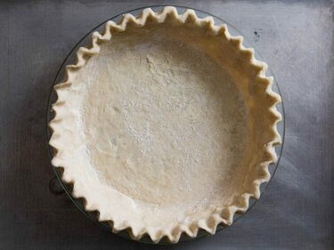

Pie Crust
Originally from: Stella Parks (Serious Eats)

Ingredients
Makes 2 crusts (or bottom and top for one pie)
- 225 g (1 2/3 cups) All-purpose flour
- 1 Tbl Sugar
- 1 tsp salt
- 2 sticks butter
- 1/2 cup cold water
Directions
- Combine and mix all dry ingredients.
- Cut butter into chunks. (One long cut in half, then maybe 8-10 smaller cuts for 16-20 pieces per stick)
- Mix into dry ingredients, and then smash each butter piece with fingers.
- Stir in water and knead into a shaggy ball.
- Roll dough into 10 x 15 inch rectangle. Then fold short ends to meet in middle, then fold in half. Fold in half other direction.
- Place folded dough in fridge for a few minutes before rolling out.
- Roll out each piece into 14 inch circle and transfer to pie plate.
Notes
-
2020-11-25 - I've made this crust a handful of times, tastes good when it turns out. I've had problems getting ingredient amounts to be enough for the two pies, seems to not quite be enough sometimes. Keeping dough cool before rolling out helps from tearing, and using more flour than you might think saves from sticking.